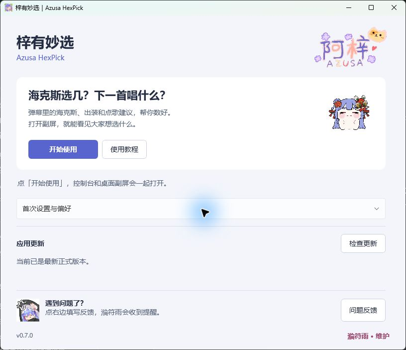
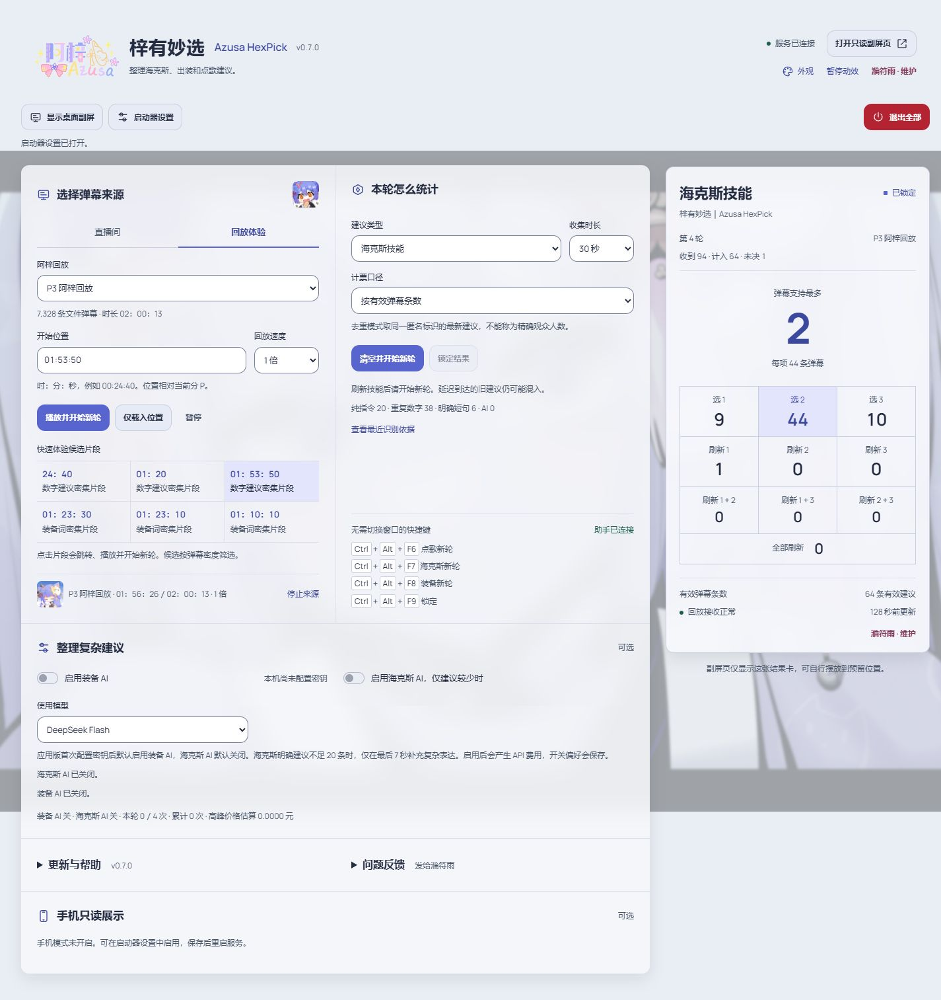
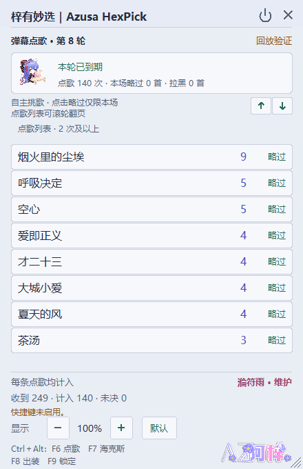

梓有妙选使用教程
海克斯、出装和点歌，都可以在副屏看。先打开程序，再连接直播间。
溣符雨 · 维护
第一次打开
- 把收到的压缩包完整解压到一个固定文件夹，例如桌面的「梓有妙选」。不要在压缩包预览里直接运行，也不要只移走其中一个 EXE。
- 双击梓有妙选.exe。无需安装 Node、Python 或 .NET。
- 如果溣符雨提供了 DeepSeek API Key，展开「首次设置与偏好」，粘贴一次并点击「保存密钥」。没有 Key 也能先用海克斯与点歌。
- 点击开始使用。网页控制台和桌面副屏会打开，启动器收起到右下角托盘。

Key 仅保存在当前 Windows 用户的加密文件中，不会随反馈上传。换电脑或换 Windows 用户，需要重新填写。不要把密钥发到公开评论里。
接入阿梓直播间
- 控制台默认选中「直播间」，编号 510 已填好，点击「接入直播间」。
- 在「建议类型」选择海克斯技能、出装建议或弹幕点歌。
- 需要弹幕帮忙时，按下对应快捷键开始一轮收集，也可以点控制台的按钮。
- 扭头看副屏里的统计，再挑自己想选的项。按 F9 可以锁定结果，不让列表继续变化。

控制台页头下方一直显示「显示桌面副屏」「启动器设置」和红色「退出全部」。副屏关掉后，点「显示桌面副屏」就能再打开，不用去找折叠菜单。
直播画面约有 5 秒延迟，观众看到问题并回复还需要一点时间。技能刷新后要开始新轮，避免混入上一轮建议。断开来源会暂停收集。
开始统计与快捷键
先确认控制台显示桌面助手已连接。按住 Ctrl 和 Alt，再按对应功能键。
| 按键 | 做什么 |
|---|---|
| Ctrl＋Alt＋F7 | 海克斯：开始新轮 |
| Ctrl＋Alt＋F8 | 出装：开始新轮 |
| Ctrl＋Alt＋F6 | 点歌：收集 60 秒 |
| Ctrl＋Alt＋F9 | 锁定当前结果；点歌不再继续跳动 |
海克斯与出装分别怎么看
海克斯统计选择 1／2／3、刷新单项、同时刷新两项，以及全部刷新。长串重复数字和明确的数字建议也会识别。
出装会归并已知装备昵称。启用 AI 后可辅助整理部分复杂表达，但仍可能漏掉含糊、反话或新昵称；「待确认」不会冒充确定装备。结果表示观众建议，不保证是最优出装。
点歌与名单
同一人多次发点歌弹幕也会逐条计入。一条弹幕里连写同一歌名，仍是一条建议。
- 大家点的歌：出现 2 次及以上。
- 单次点歌：明确点歌表达出现 1 次也能进入候选。
- 略过：点在歌曲右侧，本场后续轮次不再展示。
本场灰名单适合已经唱过、今天不想唱的歌。新一轮保留灰名单；开始新歌回或重启服务后清空。
某首歌一段时间都不想唱，可以在控制台名单管理中加入长期黑名单，选择一周、一个月、三个月、半年、一年或永久。到期自动恢复，应用更新会保留这份名单。

副屏、字号和主题
- 拖动标题栏摆放窗口；拖动边缘调整大小。
- 底部「显示」的加减按钮调整字号倍率，最大 200％，也可恢复默认。
- 控制台「外观」分别设置控制台、网页副屏和桌面窗，也能同步主题。
- 六套主题可以随时换，切换不清空计票。网页副屏适合 OBS，默认外层透明；日常扭头查看优先用桌面窗。
- 手机查看需先在启动器开启手机模式，再使用控制台生成的配对链接；手机只能看结果。
结束使用与更新
关闭副屏的叉号只关副屏。要结束使用，可以点控制台页头的红色「退出全部」，或在托盘选择同名菜单。点副屏电源图标会弹出确认窗口：选「取消」继续使用，选「确认」才关闭全部。
- 启动时会检查新版；也可展开控制台「更新与帮助」，点击「检查更新」。
- 看到更新内容后，在结束本轮收集时点击更新并重新打开。
- 程序下载、校验并更新，然后重新打开。不需要重新解压，个人背景、主题、字号、密钥和长期黑名单都会保留。
更新会结束本轮统计和本场灰名单，建议下播后操作。下载或联网失败时旧版仍可使用，稍后重试即可。不会在直播中强制重启。
问题反馈
展开控制台「问题反馈」，点击「填写问题反馈」。在弹出的问卷里写下遇到的问题，再点提交，溣符雨会收到提醒。需要时可以先查看诊断信息，复制到问卷的选填项中。以问卷显示提交成功为准；页面加载失败时可以点击备用链接在浏览器中打开。启动器也有反馈入口，服务没启动时仍可使用。
诊断只包含版本、模式和运行状态等必要信息，不含密钥、完整弹幕、昵称或电脑私人路径。程序不会自动上传诊断信息。
常见情况
- 没有建议：确认主播正在征求建议、来源已连接，并且本轮正在收集。闲聊不会当成建议，所以收到弹幕的数量通常比计入的数量多。
- 快捷键没反应：确认副屏已打开、助手已连接；也可以先用控制台按钮操作。其他程序占用快捷键时需要关闭冲突功能。
- 找不到窗口：在控制台页头点击「显示桌面副屏」，或从右下角托盘选择「打开控制台」「显示桌面副屏」。
- 端口被占用：先用旧版的停止入口退出，再启动新版；不要同时运行两份服务。
- 软件文件不完整：重新完整解压首次交付包，不要只复制 EXE。
- 更新源连接失败：可以继续使用当前版本，网络恢复后重试。